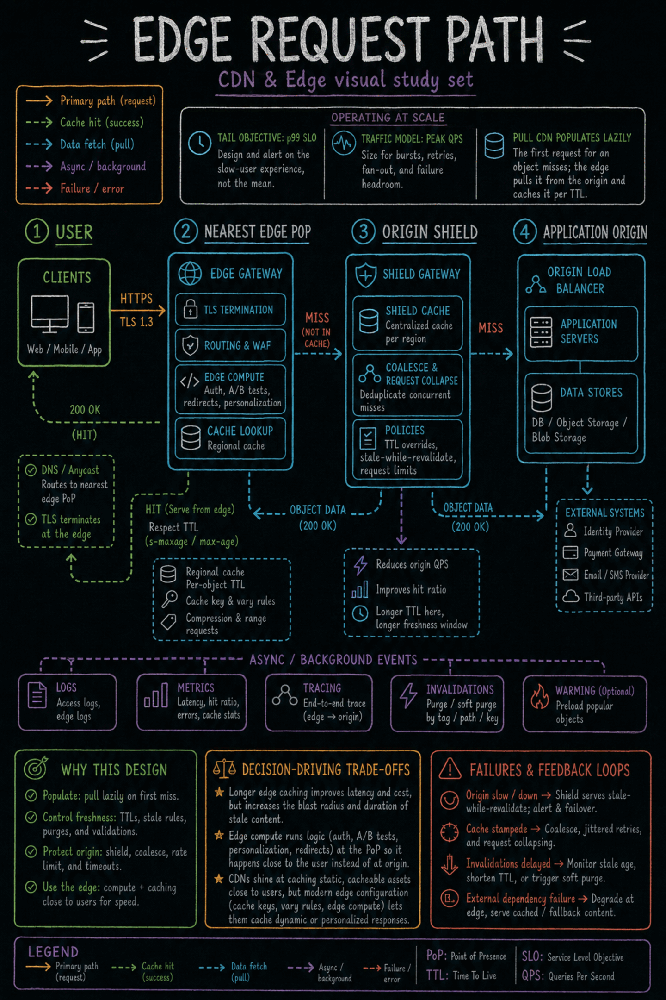

https://frosty110.github.io/js-drill/assets/system-design/infographics/components/c03/edge-request-path.pngA pull CDN populates lazily: the first request for an object misses, the edge pulls it from the origin and caches it per its TTL, and later requests are served from the edge.
How a content delivery network caches assets close to users to cut latency and offload the origin: pull vs push distribution, edge PoPs, TTL and Cache-Control headers, purge/cache-busting, origin shielding, and running compute at the edge.